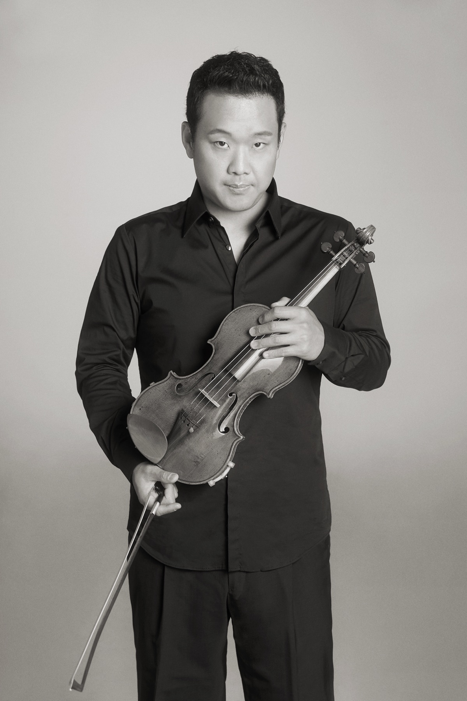
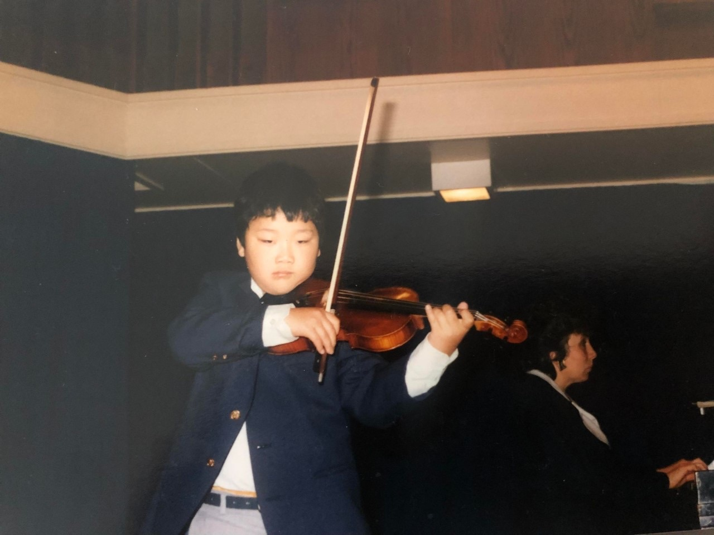

Biography
Concertmaster on four continents.
First appointed a concertmaster at twenty-two, Dennis Kim has led orchestras in Hong Kong, Seoul, Tampere, Buffalo and Orange County, and appeared as guest concertmaster on four continents.
Dennis Kim was born in Seoul in 1975 and moved to Toronto with his family at three months old. He began the violin at four. Not long after, he caught his right hand in an old playground gate and lost close to three inches of a fingertip; surgeons rebuilt it with a skin graft, and he spent a year away from the instrument. Had it been the left hand, he has said, he would almost certainly not be playing today.
From seven he studied with the late Victor Danchenko at the Royal Conservatory of Music in Toronto, the teacher who shaped his earliest years on the violin. At fourteen he made his solo debut with the Toronto Philharmonic, playing the Mendelssohn Violin Concerto in E minor.
He went on to the Curtis Institute of Music and the Yale School of Music. His principal teachers were Danchenko, Jaime Laredo, Aaron Rosand, Yumi Ninomiya Scott, Peter Oundjian and Paul Kantor; in chamber music he was coached by Isaac Stern, Felix Galimir and Claude Frank.
His first concertmaster appointment came at twenty-two, with the Tucson Symphony. He subsequently led the Hong Kong Philharmonic as the youngest concertmaster in that orchestra's history, and in 2005 became concertmaster of the Seoul Philharmonic.
Three years later he was asked, on ten hours' notice, to replace an ailing William Preucil on the Busan Philharmonic's tour of Japan. He played Vivaldi's Four Seasons twenty times in a single week.
In 2010 he was appointed concertmaster of the Tampere Philharmonic, the first foreign musician to hold the post in the Finnish orchestra's history, and led it for five seasons. He appeared as guest concertmaster with the Bergen Philharmonic on a ten-city tour of the United Kingdom, and led the Qatar Philharmonic's debut at the BBC Proms, in front of eight thousand people at the Royal Albert Hall. In 2015 he returned to North America as concertmaster of the Buffalo Philharmonic, commuting to Toronto through those seasons to teach at his alma mater.
In 2018 Pacific Symphony named him concertmaster under the baton of Carl St.Clair, where he holds the Eleanor and Michael Gordon Chair. In 2021 he co-founded Trio Barclay with cellist Jonah Kim and pianist Sean Kennard as the first Ensemble-in-Residence of the Irvine Barclay Theatre.
Alongside the season he records for film and television in Los Angeles, and he is Assistant Professor of Violin at the University of California, Irvine, serving each summer as Valade Concertmaster at the Interlochen Arts Camp. He lives in Irvine, California, with his wife and two daughters.

The early years

Chronology
-
1975
Born in Seoul
Moves to Toronto with his family at three months old.
-
Age 4
Begins the violin
Shortly after, an accident with a playground gate costs him the tip of a finger on his right hand. A skin graft follows, and a year away from practice. Had it been the left hand, he has said, he would almost certainly not be playing today.
-
Age 7
Royal Conservatory of Music
Begins formal study in Toronto with the late Victor Danchenko.
-
Age 14
Solo debut
Performs the Mendelssohn Violin Concerto in E minor with the Toronto Philharmonic.
-
Curtis · Yale
Conservatory years
Studies with Jaime Laredo, Aaron Rosand and Yumi Ninomiya Scott at Curtis, and Peter Oundjian at Yale; also with Paul Kantor at the Aspen Music Festival.
-
1998
A first appointment, at twenty-two
Named concertmaster of the Tucson Symphony, then joins the Hong Kong Philharmonic as Third Associate Concertmaster.
-
c. 2000
Hong Kong Philharmonic
Becomes concertmaster — the youngest in the orchestra's history.
-
2005
Seoul Philharmonic
Takes the concertmaster chair in Seoul.
-
2008
Twenty Four Seasons in a week
On ten hours' notice, steps in for an ailing William Preucil on the Busan Philharmonic's tour of Japan, performing Vivaldi's Four Seasons twenty times in seven days.
-
2010 — 2015
Tampere Philharmonic
The first foreign concertmaster in the Finnish orchestra's history.
-
2014
Royal Albert Hall
Guest concertmaster with the Bergen Philharmonic on a ten-city UK tour, and leads the Qatar Philharmonic's BBC Proms debut before an audience of eight thousand.
-
2015 — 2018
Buffalo Philharmonic
Concertmaster in New York, commuting to Toronto to teach at his alma mater, the Royal Conservatory of Music.
-
2018 — Present
Pacific Symphony
Named concertmaster under Carl St.Clair, succeeding Raymond Kobler, and moves to Irvine, California.
-
2021 — Present
Trio Barclay
Co-founds the trio with cellist Jonah Kim and pianist Sean Kennard as the first Ensemble-in-Residence of the Irvine Barclay Theatre.
-
2026
Beyond the Pacific
Trio Barclay releases the album on Orchid Classics, with three works written for the ensemble by Sheridan Seyfried, John Wineglass and Michael Fine.
In conversation
Lineage
The people who taught him.
Principal teachers
Chamber music coaching
He has since collaborated with Pinchas Zukerman, Jaime Laredo, and members of the Guarneri and Tokyo String Quartets.
Off the stage
A lifetime in sport.
From an early age, Dennis showed incredible athletic ability. At the age of 5 he was selected to play right field for his church baseball team playing with 17 year olds. He went 0-63 at the plate, but he only made 10 errors in 11 chances in the field.
He went on to play sweeper for his church soccer team. His team allowed no goals for the whole 5 game tournament, and the goalie went on to win the MVP. The goalie made roughly 2 saves in 5 games, thanks to the sacrificing defensive play of the young Dennis. Dennis’ parents thought the goalie was awarded the prize unfairly, and decided to change churches.
All through primary and junior school, Dennis was consistently picked 1st overall for all recess sports. Basketball, football, baseball, 4 squares, wall ball, any and all team sports. He was especially good at floor hockey, and had his parents been able to afford skates, Mr. Kim would surely have made it to the NHL. He was on the city championship winning slow-pitch and touch football teams, representing Forest Hill Junior school.
He went on to win the under 17 Korea Times baseball tournament for the Light Presbyterian Church, awarded the game ball for his incredible play, dedication and excellent leadership.
In high school, he played TE and place kicker for the Northern Secondary School Red Knights. That team won the city championships. He caught zero balls all season, but blocked opposing DE’s with skill and power, allowing zero sacks.
In college, Mr. Kim had a 2 year unbeaten streak in ping pong, he chose his opponents wisely. He would start many matches with a different grip to make games more interesting. Nicknamed weak style, Mr. Kim frustrated opponents to painful defeat.
Mr. Kim also finished 2nd in a 3 on 3 basketball tournament in Toronto with his equally athletically gifted brother William. Dennis finished the 5 game tournament with 2 points and 84 rebounds.
In Hong Kong, Mr. Kim played left back for the Hong Kong Philharmonic’s football team. He was nicknamed the Great Wall, ironically the only Korean on a team full of Chinese players. In Korea, he was converted to striker, and captained the Seoul Philharmonic’s football team, consistently scoring highlight-reel goals, taking advantage of the fact there was no offsides.
A talented golfer, Mr. Kim developed his unorthodox half swing to perfection. Having never had a lesson, Mr. Kim went on to shoot a personal best 77, and recorded 2 eagles in his short career. Mr. Kim retired from golf in 2004.
In Finland, he continued his athletic excellence, playing both football and hockey for his orchestra teams. He was drafted by a local semi-professional baseball team, the Tampere Tigers. Unfortunately the games conflicted with rehearsal times, so he never did suit up for the Tigers.
At the Atlantic Music Festival, Mr. Kim co-founded the Soccer Program, and was captain of the Troubled Clefs. In the summer of 2012, he captained the Bongs to an undefeated season, humiliating the Sols.
In 2015 Mr. Kim moved to the USA and started playing tennis. He took to the game quite well, and impressed everyone immediately. Almost all of the people Dennis played were retired and in their early 70s. Mr. Kim was appointed assistant coach of his daughter’s grade 5-6 coed soccer team at the Park School. Rumors were he was hired because he was the loudest parent in the stands; those rumors were never verified.
In 2018, California became the new home base for Mr. Kim’s athletic domination. Regularly crushing opponents in racquetball and pickleball, Mr. Kim continues to receive critical acclaim for his athleticism.
In the summer of 2022, Mr. Kim once again went undefeated in ping pong at a festival full of self-proclaimed excellent ping pongers. Interlochen 2022 has been unofficially titled the Dennis Kim ping pong summer.
Next